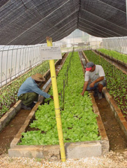

El cultivo sobre sustratos orgánicos o semiorgánicos gana espacio en la actualidad ante las más diversas razones
No siempre se tiene acceso a un terreno con las características óptimas para el cultivo en el entorno rural. A veces, aún teniendo un terreno óptimo se requiere controlar determinadas condiciones que obligan a hacer huertas protegidas contra factores adversos tales como el riesgo de erosión, el drenaje, los vientos, entre otros. Tener un huerto en los alrededores de la casa no siempre es posible porque el terreno no es el apropiado.
La agricultura en las ciudades se ha convertido en una necesidad y cuenta con incalculable potencial para obtener alimentos y otros productos útiles para la salud y la cocina. Más de 200 millones de personas en las ciudades del mundo practican alguna de las diversas modalidades de agricultura urbana.
La palabra organopónico no sólo se refiere al uso de sustratos orgánicos, sino también al uso de prácticas compatibles con la agricultura orgánica o natural. El desarrollo de esta modalidad popular de agricultura en las ciudades ha experimentado éxito relevante, sin embargo cuenta con retos y dificultades que enfrentar. La adopción del cultivo organopónico requiere ser adaptado a las condiciones de cada lugar. Sin embargo, los cultivos organopónicos tienen principios y prácticas culturales con características generales que los convierten en un tipo de cultivo practicable en las más diversas condiciones.
¿Qué es un organopónico?
Un organopónico es un tipo de huerta donde se puede sembrar y cultivar plantas sobre un sustrato formado por suelo y materia orgánica mezclados en un contenedor. Los cultivos organopónicos se basan en los principios de la agricultura orgánica. Los contenedores pueden ser de distintos tipos y materiales. Las construcciones más frecuentes usan 'contenes' laterales que se hacen en el suelo. Los contenes son barreras o paredes laterales. Para construir contenes se usan distintos materiales como madera o concreto. Las fuentes de materia orgánica pueden ser diversas. Se pueden utilizar distintos tipos de materia organica como estiércol o residuos de procesos que benefician las cosechas en cultivos como la caña y el café. Los organopónicos pueden destinarse a la producción de vegetales comestibles, plantas medicinales y condimentosas.
La palabra organopónico viene de una adaptación del término hidropónico. Hidropónico es un sistema de cultivo sin suelo. En este tipo de cultivo se usan sustratos de diversos tipos que sirven como soporte de la planta. Se usa una solución líquida con todos los nutrientes requeridos para la planta. El cultivo organopónico es un tipo de agricultura útil para las condiciones en que no se tiene un suelo cultivable fértil y se quiere utilizar este espacio para la producción vegetal de forma intensiva y bajo principios de producción orgánica.
Figura 1. Esquema de un cantero de organopónico con contenes de concreto.
Canteros Chinos
Los canteros chinos son una alternativa que no requiere el uso de contenes laterales. En los canteros chinos se cava y saca una capa de suelo de 30 cm de profundidad, se remueve o picotea con tridente el fondo hasta una profundidad de aproximadamente 30 cm más. Luego se